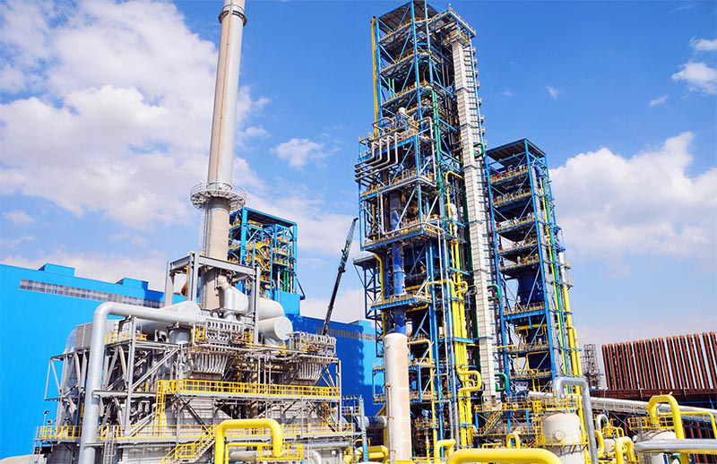
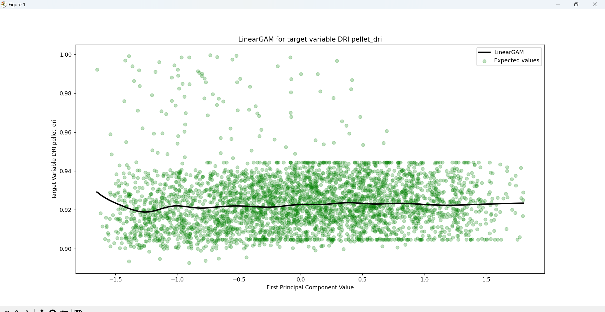

Understanding waste in Manufacturing:
Quality control and quality prediction in an iron sponge plant. How interpretation of analyses and models can be used to control waste production and predict waste generation.
SUSTAINABILITY has quickly become a core priority in modern manufacturing, driven by growing demand for
products that are more eco-friendly and a lower impact on the environment. This is due to a new need within
the manufacturing industry to be more environmentally conscious and uphold a higher responsibility on the
impact that most of the manufacturing processes have.
In industrial production systems, particularly in energy- and resource-intensive sectors, waste manifest in
various forms like material loss or energy consumption waste, which creates a necessity for companies to
create digital solutions as a way to better understand waste in manufacturing processes by identifying and
quantifying manageable elements that influence waste, enhance product quality and promotes a more
profitable and sustainable operation.
The iron and steel industry faces these challenges constantly despite their advances in technology. The
production of sponge iron (also known as direct reduced iron DRI) is famous for it's waste due to their
nonlinear and highly complex thermochemical reactions that occur on a huge reactor under strict temperature
and pressure conditions. As a result, monitoring and managing quality deviations and waste in real-time is
a significant challenge. (AND also a key opportunity for data analysis and optimization modeling)
Thanks to the integration of advanced data analytics and machine learning techniques into manufacturing
systems, it has become possible for thousands of sensors and sample data measurements to be processed for
interpretation. In the context of sponge iron production, these tools allows to develop predictive models
that link raw material quality, temperature and pressure sensor data within the direct reduction reactor,
and the final product characteristics.
This enables a dynamic quality control loop where deviations can be anticipated and corrected before they
turn into waste at the end of the manufacturing process.
This project explores how data-driven interpretations of complex processes can support two main objectives:
Quality control and Quality prediction. These objectives are approached through the lens of
simulated process data typically encountered in a sponge iron plant.
Throughout this project we will use the CRISP-DM methodology in order to generate predictive models
that can be used to forecast waste generation by identifying patterns through control sensors within a
direct reduction reactor, and information obtained from material samples taken before and after the
process, starting with the understanding of business objectives and ending with the evaluation of the
model, along with actionable insights on the data.
Within this project, we will explore the concept of manufacturing sustainability and how interpretations of
analyses and models can be used to control waste production and predict waste generation. By leveraging
data-driven approaches which manufacturers can then use to identify the sources of waste, optimize their
production processes, and reduce their environmental footprint.
The broader goal of this project is to showcase how manufacturers can leverage statistical modeling and
machine learning for identifying sources of waste, monitor quality indicators and improve the utilization
of resources.
NOTE: All data within this project is simulated and does not reflect real operational or sample data
commonly found within actual existing sponge iron manufacturing plant. The conclusions reached at the end
of the project does not truly represent findings that could be applicable to a real sponge iron production
plant.
STEP 1: Business Understanding
I. Quality control:
Quality control is an essential process within manufacturing that aims to identify and correct any defects
or deviations from the ideal production process. This project is developed for the analysis of data from
various quality control sensors for the purpose of identifying patterns of quality issues considering all
elements involved in the manufacturing process.
By pinpointing the sources and timing of these deviations, interventions can be applied in real time in
order to stabilize product quality and reduce unnecessary material and energy waste.
II. Quality prediction:
Quality prediction in manufacturing processes uses data and statistical modeling to forecast the quality of
the final product based on the input variables and process parameters. The goal is to identify potential
quality issues early in the production process, giving the manufacturer the opportunity of correcting the
production before the generation of the final product.
In a sponge iron plant, this means forecasting final product characteristics (e.g., porosity,
metallization, carbon content) from variables such as feed composition, reactor temperature, and pressure.
Anticipating product quality enables proactive process adjustments that can prevent waste before it occurs.
For Key Performance Indicators (KPI) we'll take into consideration the value added to the
manufacturing process when it's adapted to deal with waste production. The KPI's should promote a decrease
in costs, an increase in profits, and a reduction of environmental impact. (As waste usually represent
inefficient processes, low quality product or a combination of both)
STEP 2: Data Understanding
Data understanding involves all activities related to exploring the structure, content, and quality of the
datasets involved in the problem. For this manufacturing project, the primary focus is to assess the
usability of the sensor readings, material samples and production data that is collected across different
stages of the sponge iron DRI process simultaneously.
Before continuing the project, it's important to briefly introduce the underlying process. Sponge iron is a
metallic product produced by the direct reduction of iron ore within a direct reduction reactor within a
relatively controlled environment. Unlike blast furnaces, which uses coke (a type of solid fuel) as a
reducing agent at lower temperatures. The reduction process involves using gases such as gases such as
hydrogen (H2) and carbon monoxide (CO).
Within the DR reactor the iron ore experiences several chemical and thermodynamic processes such as "Redox"
reaction, "Gas-solid" reactions with reducing agents, and Heat transfer mechanisms encompass a highly
complex manufacturing process with dozens of material inputs and highly sensitive reactor conditions, and
external agents introduced during processing. Which is why understanding how these variables interact and
influence each other is critical before applying any quality control or predictive models.
Before applying any type of data models for quality control or quality prediction, we'll first have to
understand the scale and range of the data. In this case, the project will take into account the production
volume, raw material data, sensors within the reactor and quality control records.
NOTE: Within this project we won't consider any data quality issues like anomalies or missing data
as all data is generated specifically for this project.
The following are the main datasets included in this project:
1. Raw material sample data: these variables represent the physical and chemical characteristics,
dimensions and composition of iron ore before it is introduced into the direct reduction reactor. Which is
why understanding these input features is essential, as they influence the quality of reduction and the
formation of impurities in the final product.
+ Ore size (cm)
+ Iron oxide purity % (Fe2
O3)
+ Impurity 1 % (Al2O3)
+ Impurity 2 % (S)
+ Impurity 3 %
(CaO)
+ Impurity 4 % (C)
+ Abrasion measure (mm³)
+ K2Cr2O7
content
+ MgO content
+ SiO2 content
+ Unit of Porosity % (Φ)

2. Reactor sensors: represent the internal environment of the direct reduction reactor which is
monitored at different locations through the use of thermocouples and manometers in order to measure the
temperature and pressure respectively. These sensors offer insights regarding the stability and consistency
of the chemical reactions.
+ Temperature measurement 1 (C°)
+ Pressure measurement 1 (Pa)
+ Temperature measurement 2 (C°)
+ Pressure measurement 2 (Pa)
+ Temperature measurement 3 (C°)
+ Pressure measurement 3 (Pa)
+ Temperature measurement 4 (C°)
+ Pressure measurement 4 (Pa)
+ Temperature measurement 5 (C°)
+ Pressure measurement 5 (Pa)
The code resamples this data into 30-minute intervals and computes rolling averages in order to smooth the
small fluctuations that naturally occur within the reactor as a way to simulate real industrial monitoring
systems.

3. Agent flows: includes the injection of reagents, chemical binders and fluxes added within the
direct reduction reactor for the purpose of chemically altering the iron pellets into sponge iron. Measured
in flow rates.
+ Reagent 1 H2 (L/min)
+ Reagent 2 CO (L/min)
+ Reagent 3 CH
4 (L/min)
+ Binder 1 Al2O3 (kg/min)
+ Binder 2 4SiO2
(kg/min)
+ Binder 3 C6H10O5 (kg/min)
+ Binder 4 C12H
22O11 (kg/min)
+ Flux 1 CaCO3 (L/min)
+ Flux 2 CaMgCO3
+ Flux 3 SiO2
Agent flows are a very important element to the direct reduction process since every type of chemical
component has a function to the overall state of the final product.
For example, the Reagents
(or reducing gas) react with the iron oxide (FeO) in the direct reduction process to produce sponge iron
(Fe), while Binders are powders that are then added to hold fibers together and create a cohesive
structure of the iron pellets, and finally Fluxes serve to promote the chemical reactions that
happen under certain environmental conditions.
Understanding the function of these compounds is key to linking their flow behavior to process outcomes.
For example, variations in H₂ flow may affect metallization, while inconsistencies in binder composition
could increase abrasion or waste powder generation.
4. DRI sample data: serve as a way to analyze the distribution between the final product and the
waste generated after the Direct Reduction process, as well as the quality of the DRI final product which is
measured by the types of impurities commonly found within the iron ore.
+ DRI pellet %
+ Pellet size
(cm)
+ DRI purity % (Fe)
+ Impurity 1 % (S)
+ Impurity 2 % (C)
+ Metallization %
+ Slag %
+ Waste powder %
+ Unit of Porosity % (Φ)

STEP 3: Data Preparation
Now that all data has been collected and preprocessed, we can observe that each dataset originates from a
different sampling point within the direct reduction process. This reflects how actual slow industrial
processes function, where data is generated asynchronously from multiple stages of production. For this
reason, the model has to adapt the information by linking the output data with the multiple different
sources of input data.
This allows the model to trace the transformation for every single pellet batch of iron ore throughout the
entire DRI production cycle, by aligning the datasets at their relevant time-steps. In a typical DRI
process, a complete transformation - from raw pellet input to reduced iron output - takes approximately 9
hours.
In the code, this logic is applied directly to the df_raw_material dataframe by subtracting 9 hours from the timestamp. This aligns the raw material features with the corresponding DRI output for each batch.
try:
df_raw_material['Date'] = pd.to_datetime(df_raw_material['Date'], format='%d/%m/%Y %H:%M')
except ValueError as e:
df_raw_material['Date'] = pd.to_datetime(df_raw_material['Date'], format='mixed')
df_raw_material['Date'] = df_raw_material['Date'] - pd.Timedelta(hours=9)
Next, we consider the sensor data collected from within the direct reduction (DR) reactor. These variables include pressure and temperature readings from various reactor zones, recorded at high frequency (every 2 minutes). To reduce granularity and enhance interpretability, these measurements are resampled to 30 minute intervals, calculating the mean and standard deviation as a way to capture the central tendencies but also it's operational variability.
The final quality metrics observed in the DRI samples at time t are influenced by the raw material and
operating conditions that occured at time t - 9 hours. Consequently, each of the four datasets introduced
in the data understanding phase must undergo a temporal adjustment to reflect their role in this 9 hour
transformation window.
For example, if a DRI pellet is sampled at around 4:00 PM, the raw material properties responsible for its
formation would have been recorded at around 7:00 AM. In order to link both of these datasets, the data
preparation phase has to shift the timestamp of the raw material dataset back by 9 hours. This adjustment
allows us to construct a causal link between the input material data and the output DRI pellet quality
data.
try: resampled_df = df_reactor_sensor.resample('30T').agg({
'Temperature 1': ['mean', 'std'], 'Pressure 1': ['mean', 'std'],
'Temperature 2': ['mean', 'std'], 'Pressure 2': ['mean', 'std'],
'Temperature 3': ['mean', 'std'], 'Pressure 3': ['mean', 'std'],
'Temperature 4': ['mean', 'std'], 'Pressure 4': ['mean', 'std'],
'Temperature 5': ['mean', 'std'], 'Pressure 5': ['mean', 'std']})
resampled_df.reset_index(inplace=True) However, aligning the sensor data with the DRI output is more complex. Because the reactor continuously processes material over the 9-hour period, the relevant sensor readings are those observed throughout the entire time window leading up to the sampling of the DRI.
To account for this, a rolling window technique is applied across the sensor time series. The rolling average and rolling standard deviation over a 9-hour window are computed to represent the cumulative effect of reactor conditions on each pellet batch.
df_reactor_sensor = df_reactor_sensor.rolling("9H").mean()
df_reactor_sensor = df_reactor_sensor.iloc[18:]
This technique is extended to the agent flow dataset as well. Similar to the sensors, the composition and
quantity of reducing gases, binders and fluxes vary over time and influence the chemical reactions inside
the reactor. Applying a rolling window to this dataset allows us to compute the average behaviours and
fluctuations of key components over the same 9-hour period.
By using time-shifting and rolling window aggregation, we transform the original asynchronous datasets
into a unified, temporally aligned dataset. Each row in the final version of the merged DataFrame now
represents the same iron ore throughout the entire process linking: the raw material characteristics, the
reactor's internal state during the pellet's transformation, the chemical agents involved, and the final
DRI quality outcomes.
Thanks to aggregating the reactor data, we ensure that the input features and target variables reflect true
process dependencies, thereby improving the relevance and accuracy of our quality prediction and waste
estimation models. This also prevents any alignment of mismatched observations.
STEP 4: Data Exploration and Visualization
With all datasets temporally aligned and merged into a unified structure, we can now proceed with the data
exploration and visualization step that involves a number of statistical and visualization techniques that
serve in understanding the statistical characteristics of the all of the aforementioned variables and
uncovering relationships, identifying trends and anomalies, as well as preparing for informed variable
selection in the modeling phase.
Given the high number of independent variables that are within the newly structured dataset (52 independent
variables) it is logical to say that the model could face issues related to high dimensionality. High
dimensionality datasets pose several challenges: they can lead to overfitting, increase of computacional
strains, and unnecessary model complexity which can hamper the interpretability and robustness of
predictive models like the one we are planning to build.
Dimensionality problems often arise when multiple features are strongly correlated, meaning they convey
overlapping or redundant information. This redundancy can obscure the interpretability of statistical tests
for the dependent DRI product variables, and can be remedied using Dimensionality reduction
techniques. For which a correlation analysis has to be made.
Spearman's correlation matrix measures instead the strength and direction of a monotonic relationship between two variables. Pearson's correlation coefficient does not assume linearity between the variables, nor does it assume that the data is normally distributed, which is particularly helpful if there are exponential, logarithmic or even polynomial relationships between two variables.
Dimensionality reduction techniques are self-explanatory but they are a bit more advanced as simply
reducing the number of variables, as it could inadvertently lose underlying informational structure of the
data. In this project, two complementary dimensionality reduction techniques are applied and compared:
Principal Component Analysis (PCA) and Reverse Stepwise Regression.
Reverse Stepwise Regression and Principal Component Analysis (PCA) both require an in-depth
analysis of the relationships between independent variables as a way to determine which variables offer
redundancy within the dataset. In this project, we will not only apply basic Pearson correlation metrics
but also prove if there are non-linear relationships between the variables using Spearman's rank
correlation coefficient.
PCA is a statistical technique that transforms the original features into a new set of uncorrelated
components ranked by their ability to explain variance in the data. It is particularly useful when trying
to preserve information while reducing the number of input dimensions for modeling. The cumulative
explained variance is visualized to determine the optimal number of components needed to retain most of the
information, and these components are then used to train a Generalized Additive Model (GAM).
Reverse Stepwise Regression, on the other hand, is a feature selection method that iteratively removes
variables from a multivariate regression model based on statistical significance (p-values). This approach
retains only those predictors that contribute meaningfully to the target variable, offering a more
interpretable model in terms of actual variable names rather than abstract components.
Note: Reverse Stepwise Regression and PCA will help in understanding which variables impact the most
in waste generation by isolating variables most responsible for quality variation and waste formation
(Quality Control) and enable the creation of more accurate models that forecast waste levels and
final product quality characteristics (Quality prediction).
The project is handling two different Dimensionality reduction techniques as a way to mitigate the flaws of
them both. For "Reverse Stepwise Regression", the goal is to remove the least significant predictor
(based on p-value) at each step, by fitting the complete dataset into a model to the data, evaluate its
performance and then slowly remove all predictors that have the least significance until the performance of
the model reaches it's peak.
On the other hand, Principal Component Analysis (PCA) is built by transforming the dataset into principal
components, through the use of Eigendecomposition which decomposes the group of dependent
variables into their respective eigenvectors and eigenvalues. PCA then selects the top Principal components
by picking out eigenvectors based on their corresponding eigenvalues.
Unfortunately PCA comes at the cost of interpretability as these components are linear combinations
of the original features. Reverse Stepwise Regression, on the other hand, retains actual feature names and
provides transparency about which variables are most significant to waste generation and product quality.
This means that both of the results obtained from the PCA and Reverse Stepwise Regression results could be
used for training the forecasting model.
STEP 5: Feature Engineering
For both cases, we will have to preprocess the dataset by scaling all data equally. This is done because
most of the independent variables don't share the same metrics (Pressures, Temperatures, Percentages,
Measurements, etc.). There are many different scaling methods from the sklearn.preprocessing library like
StandardScaler, MinMaxScaler, RobustScaler, etc. that have the same goal of standardizing data.
Standardization ensures that variables contribute equally to model training and component generation. In
this project, the MinMaxScaler is selected adter applying both "Shapiro-Wilk" and "Kolmogorov-Smirnov"
tests for normativity and confirming that most variables DO NOT follow a normal distribution. Which is
particularly well-suited for preparing industrial process data for downstream modeling, as MinMaxScaler
utilizes linear scaling to a fixed range (-1 to 1) preserving the original shape of any of the non-normal
distributions.
Once scaled, the data is passed through a PCA transformer object in order to identify the minimum number of
components required to retain most of the dataset's variance while maintaining the minimum amount of
variables for regression.
After applying both "Shapiro-Wilk" and "Kolmogorov-Smirnov" tests for normality and goodness of fit. We can determine that none of the independent variables follow a normal distribution which pushes us to use the MinMaxScaler as it's particularly effective when the data is not normally distributed, by applying a scaling method that doesn't assume any distribution and scales the data to a range of [-1, 1], preserving the original non-normal distribution.
Note: MinMaxScaler applies a uniform scaling by subtracting the minimum value and dividing by the range of the dataset.
from sklearn.preprocessing import MinMaxScaler
scaler = MinMaxScaler()
independent_variables = final_variables.iloc[:, 1:].copy()
independent_variables.columns = independent_variables.columns.astype(str)
independent_variables = scaler.fit_transform(independent_variables)
# Python CODE: Principal Component Analysis (PCA)
In scikit-learn, PCA is implemented as a transformer object that learns components in its fit() function, which computes the covariance matrix, handles the eigendecomposition on the covariance matrix and then generates the principal components.
from sklearn.decomposition import PCA
pca_dri = PCA()
pca_dri.fit(independent_variables)
principal_components = pca_dri.transform(independent_variables)
selected_components = principal_components[:, :6]
The PCA components will be later fed into a General Additive Model (GAM) regression model that will consider the complexity of the relationships between the independent and dependent variables, as well as offer an in-depth statistical analysis of the entire process.
Thanks to the explained_variance_ratio_ function within sklearn.decomposition we can measure the
percentages of variance explained by each of generated principal components. By calculating the accumulated
sum of the ratios we can determine that the total variance of the first 6 PCA components reach a variance
of 92.39%. (If we handle 5 Components the percentage is 87.97% and if we handle 7 PCA components the
variance reaches 93.61%)
Note: If we use 14 or more components, the explained_variance_ratio_ is 1.0 indicating that we’ve
captured 100% of the variance in the dataset.
The feature selection from Reverse Stepwise Regression can serve as a useful check against the results from
PCA. While PCA identifies patterns based on variance alone, stepwise regression selects features based on
their predictive power. When the same variables appear as important in both methods, it adds confidence
that those features are genuinely influential in the process and not just statistical noise.
Using both PCA and Reverse Stepwise Regression together allows us to reduce dimensionality while keeping
the model interpretable. PCA helps simplify the dataset and manage multicollinearity, while stepwise
regression highlights the specific variables most responsible for predicting outcomes. This combined
approach strengthens the reliability of the model and ensures it reflects the underlying production
process.
Without scaling, PCA would provide misleading principal components and reduce the interpretability and performance of your GAM model that follows. Additionally, when variables have vastly different ranges, small errors in larger-valued variables can disproportionately affect the outcome. Scaling mitigates this by putting all variables on a comparable footing, which is particularly important in multicollinear systems—like yours—where slight imbalances in scale can mask or exaggerate relationships.
STEP 6: Model Building and Training
Like we mentioned before, the Generalized Additive Model (GAM) is used to estimate the relationship between
the output variables and the independent variables which is the raw materials and the DRI process. GAM
serves as an extension of linear models that incorporates non-linear effects by applying smoothing
functions to each of the PCA predictors.
Each PCA component is introduced within GAM and then transformed through the smoothing function with the
use of “splines”. Splines are smooth, flexible mathematical functions used to model non-linear
relationships between variables.
Since the PCA components contain the eigenvalues which measure the relevance to the output variables by
measuring the variance each component captures. Keeping only components that are uncorrelated to each other
(orthogonal) with large eigenvalues (carry more information).
Once the principal components have been transformed through the splice functions, the GAM structure takes
the following form:
s(0) + s(1) + ... + s(5), where s(i) is a spline applied to the i-th principal
component.
The 9 dependent (output) variables use the same set of PCA-derived features as a way to improve the
interpretability of the data by analyzing the forecasting values of the model and allowing the targeted
evaluation of how each output variable is influenced by the latent structure of the raw material and
process data.
To assess the performance of each model, scatter plots are used to compare the predicted values against the
actual observed values.

These plots include a smooth prediction curve overlaid on the scatter of true values, helping visualize
both model fit and residual variance. The first principal component is particularly useful for
visualization since it typically captures the largest source of variance in the input data, making it a
strong proxy for dominant process behavior.
After building the GAM model using PCA-transformed inputs, the next step is to repeat the modeling process
using Reverse Stepwise Regression. This technique helps identify the most relevant original features rather
than transformed ones, which links the insights of the model directly to the physical variables from the
raw material or DRI process data.
Using the statsmodels library, reverse stepwise regression begins with all variables included in the model.
The variable with the highest p-value (indicating the least statistical significance) is removed, and the
model is refit. This iterative elimination continues until only the 6 most statistically significant
variables remain. These selected features are then used as inputs to a second GAM model, following the same
spline-based structure used for the PCA-derived model.
By comparing the performance and interpretability of both models—one based on PCA components, the other on
statistically-selected raw features—we can evaluate trade-offs between dimensionality reduction and
variable transparency. The PCA-based model may offer smoother performance and reduced noise, while the
stepwise model provides clearer links to specific process parameters, which is valuable for engineering
insights and decision-making.